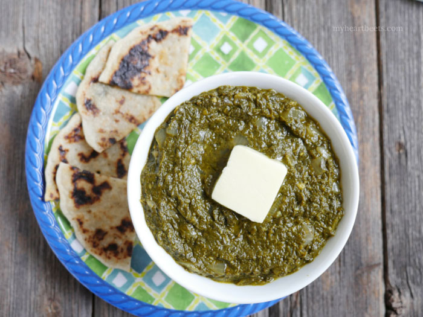

Saag

If you have trouble getting in your greens, this dish is not only delicious, but guaranteed to pack in your daily dose of iron!
Traditionally, saag is blended after cooking to rich, creamy consistency. What this recipe lacks in authenticity, it makes up for in accessibility - no matter how small your apartment kitchen and how lacking your appliances (namely, a space-consuming blender or immersion blender), you too can make this recipe! It may not be as creamy as it should be, but it's still delicious and nutritious.
Ingredients
- 2 tbsp ghee
- 2 diced onions
- 1 head minced garlic
- 1 pound spinach rinsed (fresh or frozen)
- 1 pound mustard leaves
- 1 metric ton of spices
Steps
- Finely chop the spinach and mustard leaves, removing any tough stems.
- Heat ghee in a large pan over medium heat.
- Add onion, garlic and spices and stiry fry for 2 minutes.
- Add the greens a handful at a time until they wilt and make room for more.
- Simmer for 15 minutes, or as long as it takes to boil off excess water from the leaves.
- Serve with a tablespoon of ghee and enjoy!